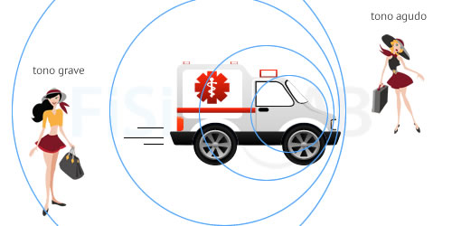

EFECTO DOPPLER
HECHO POR VÍCTOR BARBERO Y SERGIO BENITO-SENDÍN DEL BC2A DEL IES MARTINEZ URIBARRI
PINCHA EN LOS ENLACES DE LA DERECHA PARA SABER MÁS DE ESTE FENÓMENO FÍSICO.
ENLACES
¿QUÉ ES EL EFECTO DOPPLER?
DESCUBRIMIENTO DEL EFECTO DOPPLER
USOS COTIDIANOS DEL EFECTO DOPPLER
